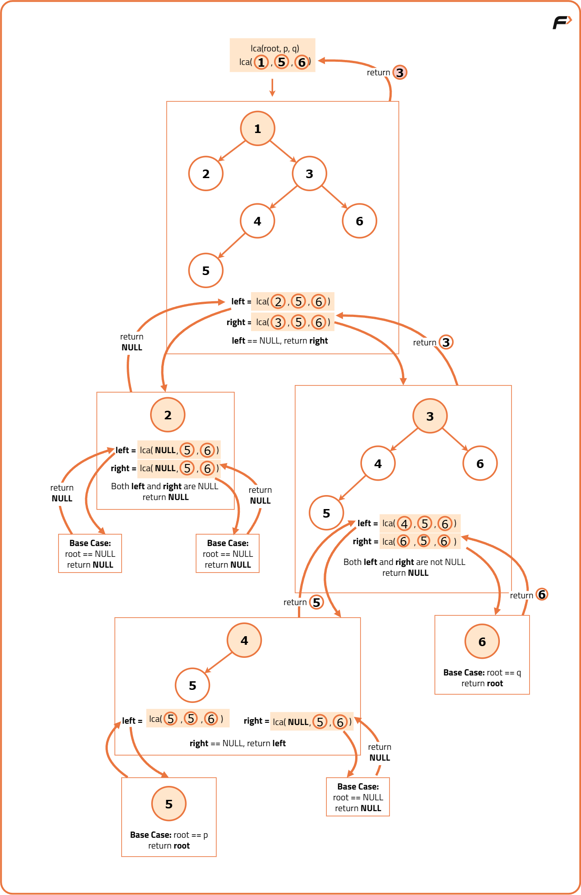

Lowest Common Ancestor for two given Nodes
Problem Statement:
Given a root of binary tree, find the lowest common ancestor (LCA) of two given nodes (p, q) in the tree.
The lowest common ancestor is defined between two nodes p and q as the lowest node in T that has both p and q as descendants (where we allow a node to be a descendant of itself).
Examples
Example 1: Input: root = [3, 5, 1, 6, 2, 0, 8, null, null, 7, 4], p = 5, q = 1 Output: 3 Explanation: The lowest common ancestor (LCA) of nodes 5 and 1 is node 3, as it is the first common ancestor of both nodes in the binary tree. Example 2: Input: root = [3, 5, 1, 6, 2, 0, 8, null, null, 7, 4], p = 5, q = 4 Output: 5 Explanation: The lowest common ancestor (LCA) of nodes 5 and 4 is node 5, as node 5 is the ancestor of node 4 in the binary tree.
Disclaimer: Here is the practice link to help you assess your knowledge better. It's highly recommend trying to solve it before looking at the solution.
Approach
Algorithm
- Start by checking if the current root node is null or matches one of the target nodes (x or y). If the root is null or matches either target node, return the root, as it could be the LCA or simply indicate the end of the search path.
- Perform a recursive search in the left subtree to find nodes x and y by calling the LCA function on the left child of the current root.
- Similarly, perform a recursive search in the right subtree by calling the LCA function on the right child of the current root.
- After completing the recursive searches, analyze the results of both subtree searches:
- If both recursive calls return non-null values, it means one target node was found in each subtree. In this case, the current root node must be the LCA, as it is the common ancestor of both nodes.
- If only one of the subtree searches returns a non-null result, it implies both target nodes are located within the same subtree. Return the non-null result, which represents the LCA found in that subtree.

Code
#include <bits/stdc++.h>
using namespace std;
struct TreeNode {
int data;
TreeNode* left;
TreeNode* right;
TreeNode(int val) : data(val), left(NULL), right(NULL) {}
};
class Solution {
public:
TreeNode* lowestCommonAncestor(TreeNode* root, TreeNode* p, TreeNode* q) {
// Base case
if (root == NULL || root == p || root == q) {
return root;
}
// Search in left and right subtrees
TreeNode* left = lowestCommonAncestor(root->left, p, q);
TreeNode* right = lowestCommonAncestor(root->right, p, q);
// Result
if (left == NULL) {
return right;
} else if (right == NULL) {
return left;
} else { // Both left and right are not null, we found our result
return root;
}
}
};
int main() {
// Construct a simple binary tree
TreeNode* root = new TreeNode(3);
root->left = new TreeNode(5);
root->right = new TreeNode(1);
root->left->left = new TreeNode(6);
root->left->right = new TreeNode(2);
root->right->left = new TreeNode(0);
root->right->right = new TreeNode(8);
Solution solution;
TreeNode* p = root->left; // Node with value 5
TreeNode* q = root->right; // Node with value 1
TreeNode* lca = solution.lowestCommonAncestor(root, p, q);
cout << "Lowest Common Ancestor: " << lca->data << endl;
return 0;
}Complexity Analysis
Time Complexity: O(N), where N is the number of nodes in the binary tree. In the worst case, we may need to traverse all nodes to find the LCA.
Space Complexity: O(H), where H is the height of the binary tree. This is due to the recursive stack space used during the traversal. In the worst case, for a skewed tree, H can be equal to N, but for a balanced tree, H will be log(N).